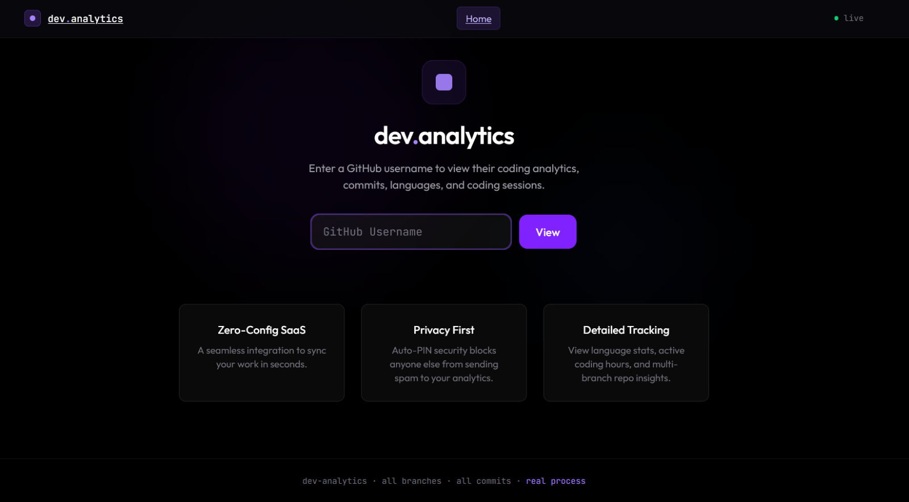
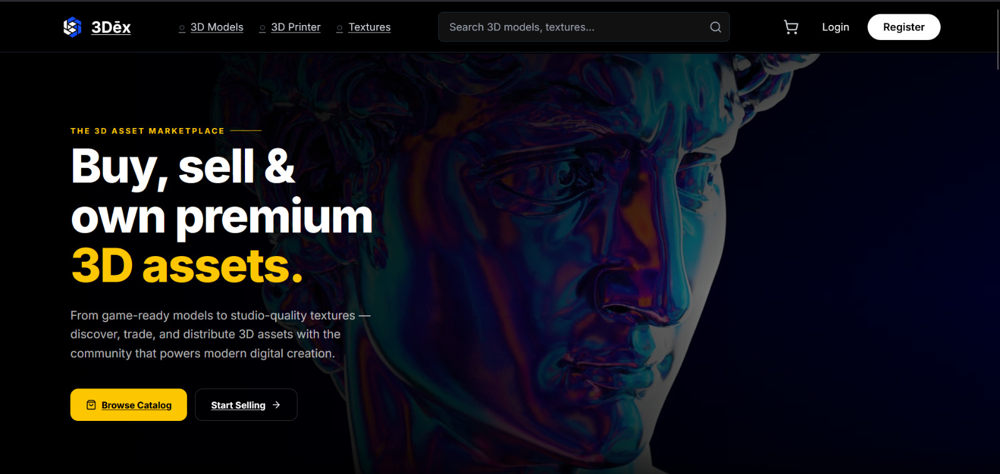
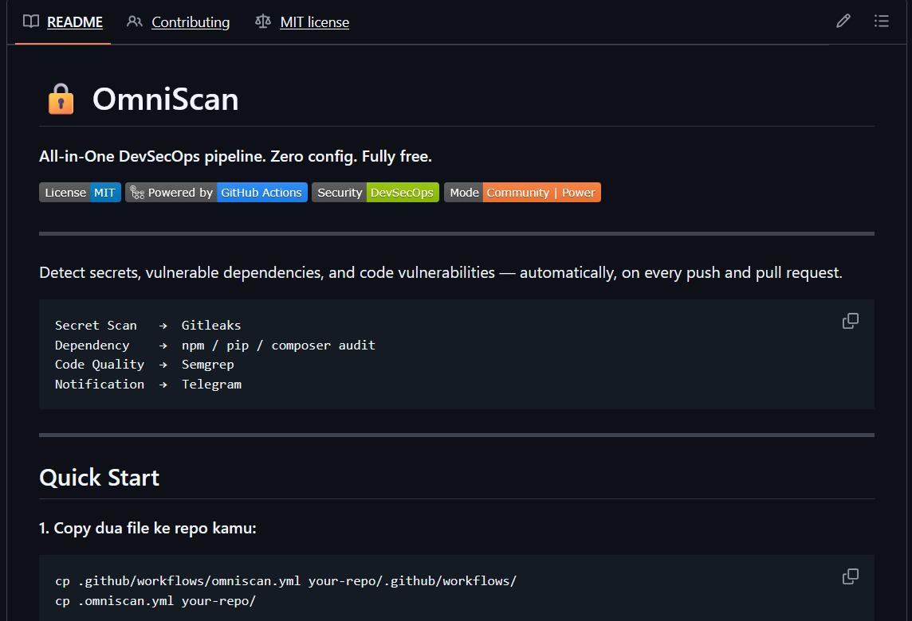
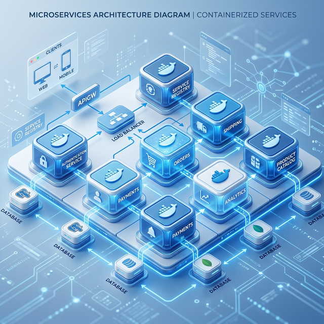
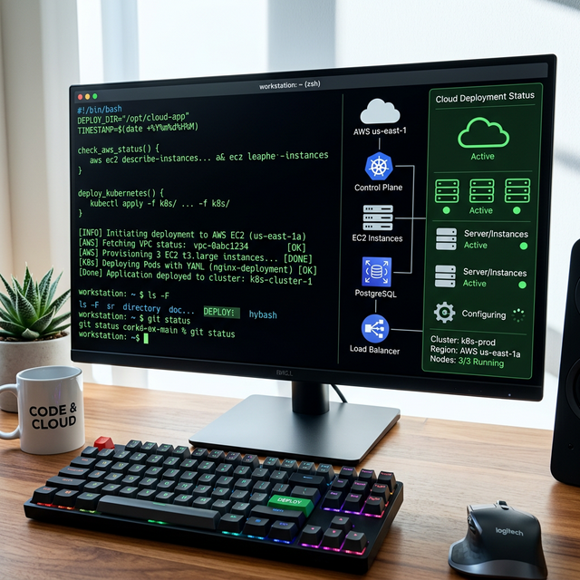

My Portfolio
Explore my technical projects, featuring web applications, system scripts, and devops implementations. Find more of my work on GitHub.
Featured Projects
Visual highlights of some projects I've built and experimented with.

Dev-Analytics
A personal developer analytics tool that turns Git repositories into insights about coding activity and progress. .

3Dex - 3D Assets Marketplace
A web-based application using Next.js and Express.js to manage and sells 3D assets efficiently.


Microservices Lab
Experimenting with Docker containerization and Docker-Compose for multi-service apps.

DevOps Lab
Experimenting with Docker containerization and Docker-Compose for multi-service apps.
Archive & Progress
| No | Project Title | Language/Tool | Progress |
|---|---|---|---|
| 1 | Dev-Analytics | Shell, Python | 100% |
| 2 | 3Dex | Next.js, Express.js | 100% |
| 3 | Omni-Scan | Bash Scripting | 100% |
| 4 | DevOps Lab | Docker, Ansible, Terraform | 90% |